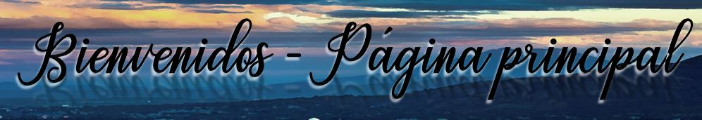
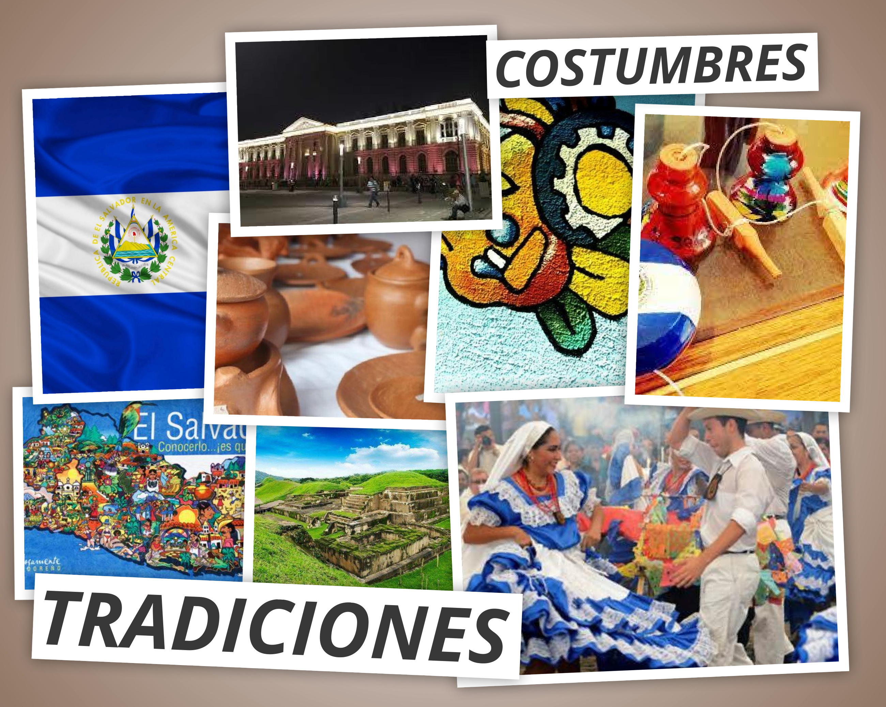

�


Las costumbres y tradiciones de El Salvador son manifestaciones culturales que se han transmitido de
generación en generación hasta llegar a nuestros días.
Han formado parte de nuestra historia, son nuestra identidad, la identidad salvadoreña, debes sentirte
orgulloso de tus raíces u orígenes, lo que te hace característico salvadoreño.
Las Costumbres y Tradiciones de El Salvador, nos permiten conocer nuestra cultura, además nos ayudan a
descubrir el alma nacional transmitiendo alegría, tristeza, deseos, esperanzas, sentimientos religiosos
que en cada una de ellas se encuentran.
Las Tradiciones de El Salvador están basadas en: Gastronomía, Música, Danzas Folklóricas,
Fiestas Patronales, Trajes Típicos, entre otras.
Cabe destacar que las Costumbres y Tradiciones salvadoreñas son grandes atractivos turísticos, y cada
pueblo o zona del país cuenta con sus propias tardiciones aunque algunas son muy generales y se viven en
varias municipios.
.Las Costumbres y Tradiciones de El Salvador, nos permiten conocer su cultura, además ayuda a descubrir el alma nacional
transmitiendo alegría, tristeza, deseos, esperanzas, sentimientos religiosos que en cada una de ellas se encuentran.
Pueblos Vivos El Salvador se encarga de demostrar las identidades culturales de cada municipio del país.
Hecha un pequeño vistazo a este sitio web para descubrir las maravillas culturales que son joyas en El Salvador